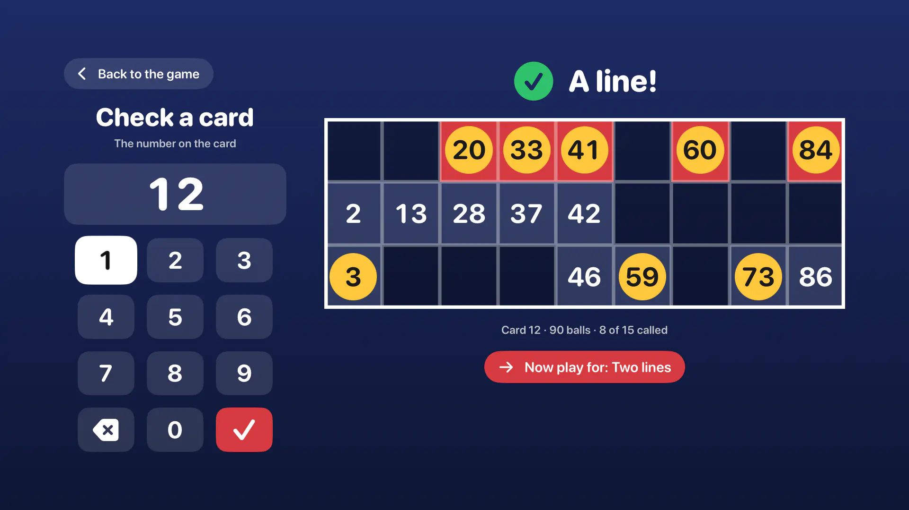
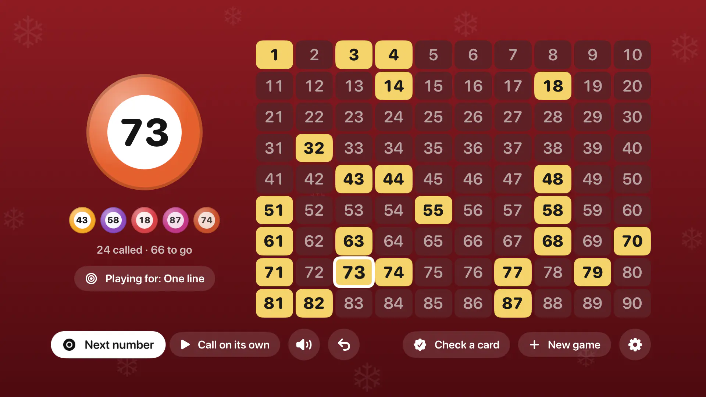
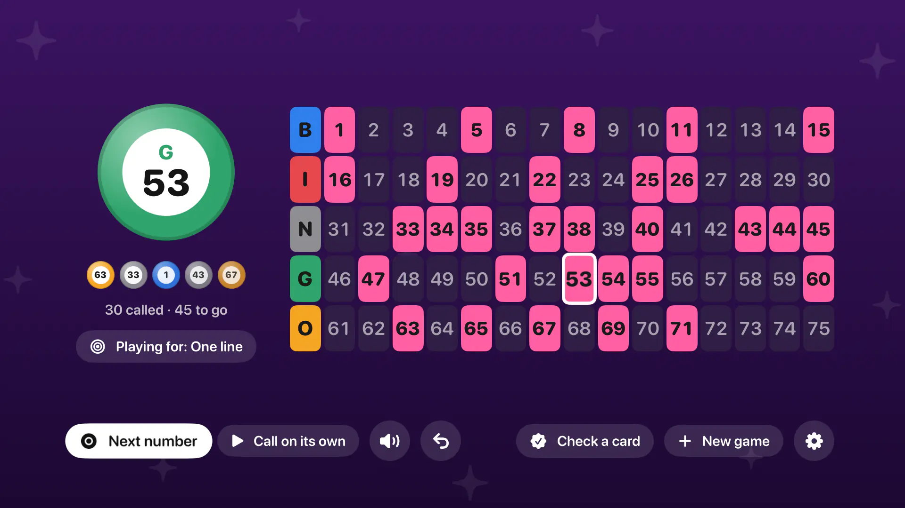
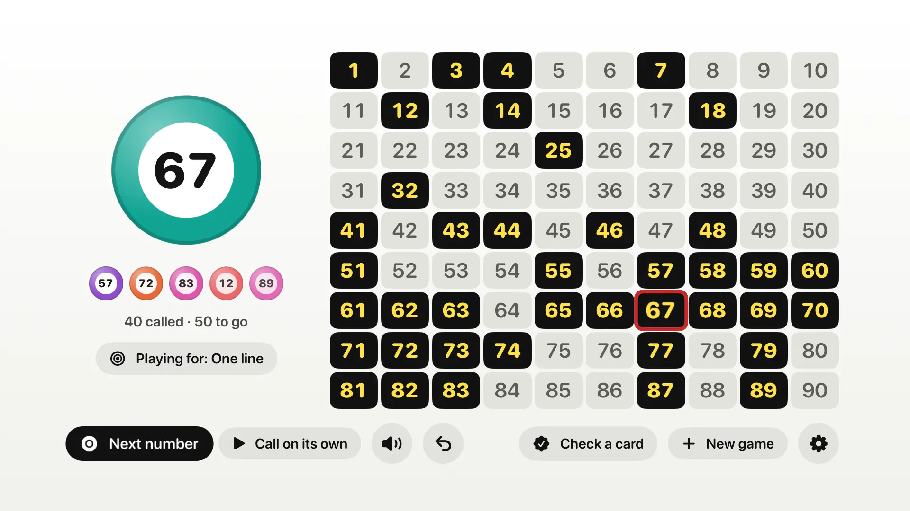
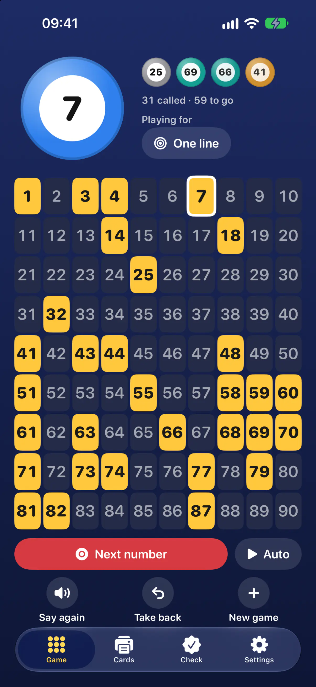
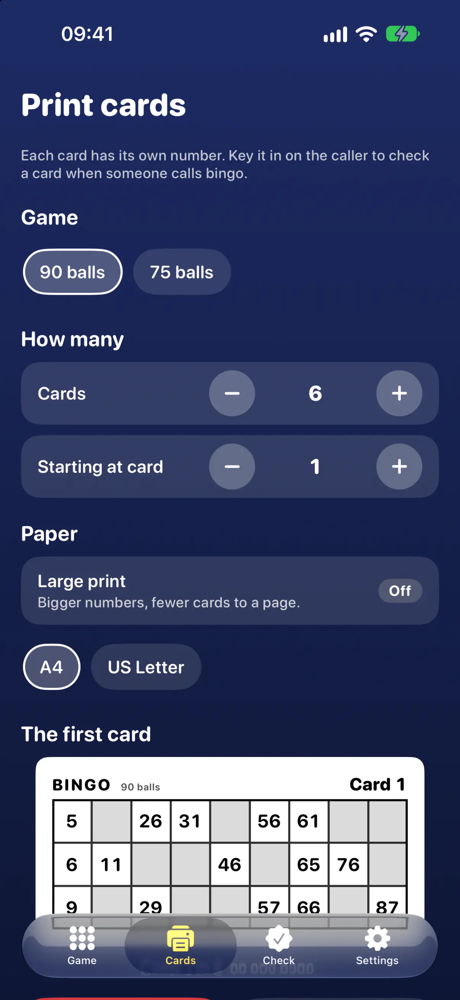
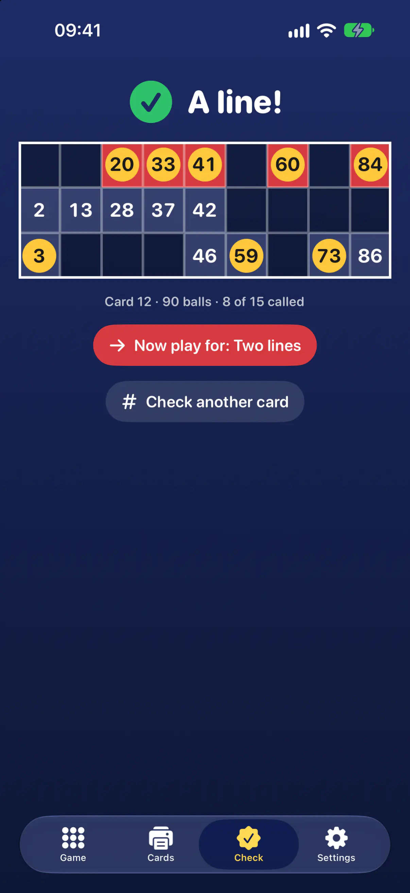
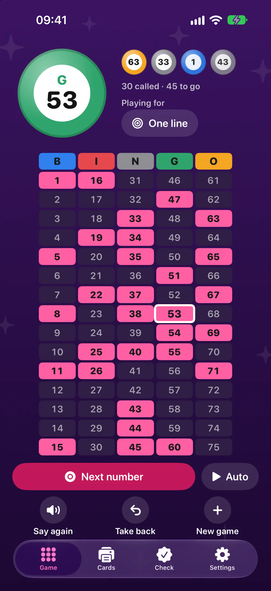

Bingo Caller
Play bingo together on the big screen. Bingo Caller shows the board on your Apple TV, calls every number aloud in English or Portuguese, and prints the cards from your iPhone or iPad. When someone shouts “Bingo!”, key in the number on their card and the TV checks it.
Made for the whole room
For care homes, schools, bars and the family at Christmas: the board on the TV, where everyone can see it, and the cards from your iPhone or iPad.
-
The board, from across the room
A big ball for the number just called, the five before it, and the whole board lighting up as the numbers come out.
-
Every number called aloud
After a short sound, in your device’s best English or Portuguese voice. Each digit first if you like (“two and three, twenty-three”), so 13 and 30 are never mixed up.
-
Click, or let it call
Click for the next number, or let it call on its own every 5 to 30 seconds (Play/Pause on the Siri Remote). Say a number again, take back one called by mistake, and carry on after closing the app.
-
90 or 75 balls
90-ball bingo, as in British halls and Portuguese loto: one line, two lines, then a full house. Or 75-ball bingo, as in America: a line, then the whole card, with B I N G O cards.
-
Cards from your iPhone
Print cards from your iPhone or iPad: six to a page, or large print for older eyes, on A4 or US Letter. Laminate them and use them again: the same number is always the same card.
-
Cards the TV checks
Every card has its own number. Key it in on the TV and the card comes up with the numbers called so far marked and the winning line lit, and the answer is said aloud.
-
A look for every room
Classic, and Bright, a high-contrast look for care homes and sunny rooms. Then Christmas, Party and Garden for the occasion.
-
No Apple TV? No problem
An iPhone or iPad can be the caller too, with the same board and voice: on a projector, or on a TV with AirPlay.
-
English and Portuguese
The app follows your device’s language, and the numbers can be called in either. For 90 balls in English, the traditional British nicknames too, if you want them (“two fat ladies, 88”).
-
No ads, no account
No ads, no tracking and nothing to sign in to. The game is played on your devices, so it works without the internet too.
- Apple TV 4K
- Apple TV HD
- iPhone
- iPad
- tvOS 17+
- iOS 17+
Free, with one purchase for the rest
Calling a game aloud is free, with 90 or 75 balls, on every device.
Free
€0
- Both games90 and 75 balls, every number said aloud.
- On every deviceThe Apple TV, iPhone and iPad can each call a game.
- Classic and BrightTwo looks, one of them high contrast for care homes.
- Cards 1 to 6Six cards to print from your iPhone or iPad.
Bingo Complete
€4.99 once No subscription
- As many cards as you likeNumbered from wherever you choose.
- Checking cardsKey in a card’s number and see if it has won.
- The nicknamesThe traditional British calls, for 90 balls in English.
- Every lookChristmas, Party and Garden as well.
One purchase covers your Apple TV, iPhone and iPad, and your family with Family Sharing. Prices are in euros: the App Store shows the price for your country.
Bingo Caller is for games played for fun: it takes no bets and gives no prizes.
On the TV, for the whole room




And on iPhone and iPad




Questions
How does checking a card work?
Every card has its own number, printed on it. When someone shouts “Bingo!”, choose Check a card on the TV (or the Check tab on iPhone and iPad) and key in that number: the card comes up with the numbers called so far marked and the winning line lit, and the answer is said aloud. Each card is worked out from its number, so the TV doesn’t need anything from your iPhone to check it. Checking cards is part of Bingo Complete.
Cada cartão tem o seu número, impresso no próprio cartão. Quando alguém disser «Bingo!», escolha Verificar cartão na TV (ou o separador Verificar no iPhone e no iPad) e introduza esse número: o cartão aparece com os números que já saíram marcados e a linha vencedora acesa, e a resposta é dita em voz alta. Cada cartão é calculado a partir do seu número, por isso a TV não precisa de nada do iPhone para o verificar. Verificar cartões faz parte do Bingo Completo.
Do I need an Apple TV?
No. The iPhone and iPad app can call a game too: put an iPad on a projector, or show the game on a TV with AirPlay. With an Apple TV, the TV calls the game and your iPhone or iPad prints the cards.
Não. A app do iPhone e do iPad também canta o jogo: ligue um iPad a um projetor, ou mostre o jogo numa TV com AirPlay. Com uma Apple TV, a TV canta o jogo e o iPhone ou o iPad imprimem os cartões.
How do I print the cards?
On your iPhone or iPad, open Cards and choose 90 or 75 balls, how many cards, the number of the first one, large print if you like, and A4 or US Letter. The cards are made on your device as a PDF, black on white, six to a page (two or three in large print), to print or to send with AirDrop or to Files. The same number is always the same card, so you can laminate them and use them again.
No iPhone ou no iPad, abra Cartões e escolha 90 ou 75 bolas, quantos cartões, o número do primeiro, letra grande se quiser, e A4 ou Carta (EUA). Os cartões são feitos no dispositivo, em PDF, a preto sobre branco, seis por página (dois ou três em letra grande), para imprimir ou enviar por AirDrop ou para a app Ficheiros. O mesmo número é sempre o mesmo cartão, por isso pode plastificá-los e voltar a usá-los.
How do I call with the Apple TV remote?
Click for the next number, or press Play/Pause to call on its own every 5 to 30 seconds (choose the pace in Settings), and again to stop. The buttons under the board say the number again, take back one called by mistake, check a card or start a new game. The game is saved as it goes, so it carries on if the app is closed.
Clique para o próximo número, ou prima Reproduzir/Pausa para cantar sozinho a cada 5 a 30 segundos (escolha o ritmo nas Definições), e outra vez para parar. Os botões por baixo do painel repetem o número, anulam um que saiu por engano, verificam um cartão ou começam um novo jogo. O jogo vai sendo guardado, por isso continua se a app for fechada.
What’s free, and what does Bingo Complete add?
Calling 90- and 75-ball games aloud on Apple TV, iPhone and iPad, the Classic and Bright looks, and printing cards 1 to 6 are free, with no ads. Bingo Complete, €4.99 once with no subscription, adds as many cards as you like, checking cards, the nicknames and every look.
Cantar jogos de 90 e de 75 bolas na Apple TV, no iPhone e no iPad, os temas Clássico e Alto contraste e imprimir os cartões 1 a 6 são grátis, sem anúncios. O Bingo Completo, 4,99 € uma vez, sem subscrição, acrescenta todos os cartões que quiser, verificar cartões, as alcunhas e todos os temas.
I bought Bingo Complete. How do I get it on another device?
It belongs to your Apple Account, so you only pay once for your Apple TV, iPhone and iPad, and your family has it too with Family Sharing. It usually appears by itself; if not, open Settings › Bingo Complete › Restore purchase.
Fica associado à sua conta Apple, por isso paga uma só vez pela Apple TV, pelo iPhone e pelo iPad, e a sua família também o tem com a Partilha com a família. Normalmente aparece sozinho; se não, abra Definições › Bingo Completo › Restaurar compra.
Does it need the internet?
No. The voice is your device’s own, the cards are made on the device, and a card is checked from its number alone, so a game works without the internet. Only buying Bingo Complete goes through the App Store.
Não. A voz é a do próprio dispositivo, os cartões são feitos no dispositivo e um cartão é verificado só a partir do seu número, por isso um jogo funciona sem internet. Só a compra do Bingo Completo passa pela App Store.
Does Bingo Caller collect anything?
No. There’s no account, no ads and no tracking, and nothing is sent to us. The game in play and your settings stay on the device. See the privacy policy.
Não. Não há conta, anúncios nem rastreamento, e nada nos é enviado. O jogo em curso e as suas definições ficam no dispositivo. Consulte a política de privacidade.
Which devices do I need?
Any Apple TV 4K or Apple TV HD with tvOS 17 or later, and any iPhone or iPad with iOS 17 or later. To print cards you need an iPhone or iPad.
Qualquer Apple TV 4K ou Apple TV HD com tvOS 17 ou posterior, e qualquer iPhone ou iPad com iOS 17 ou posterior. Para imprimir cartões precisa de um iPhone ou de um iPad.
How do I get help?
Email support@jfpfsolutions.com. We usually reply within one business day.
Envie um email para support@jfpfsolutions.com. Normalmente respondemos num dia útil.